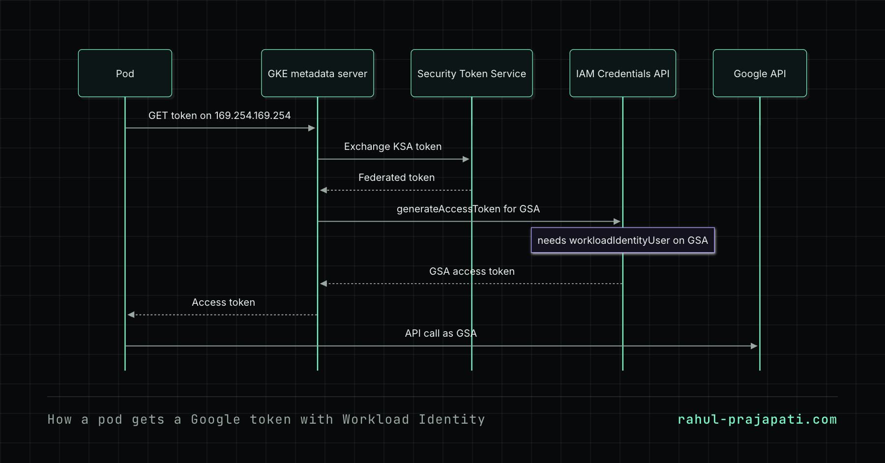
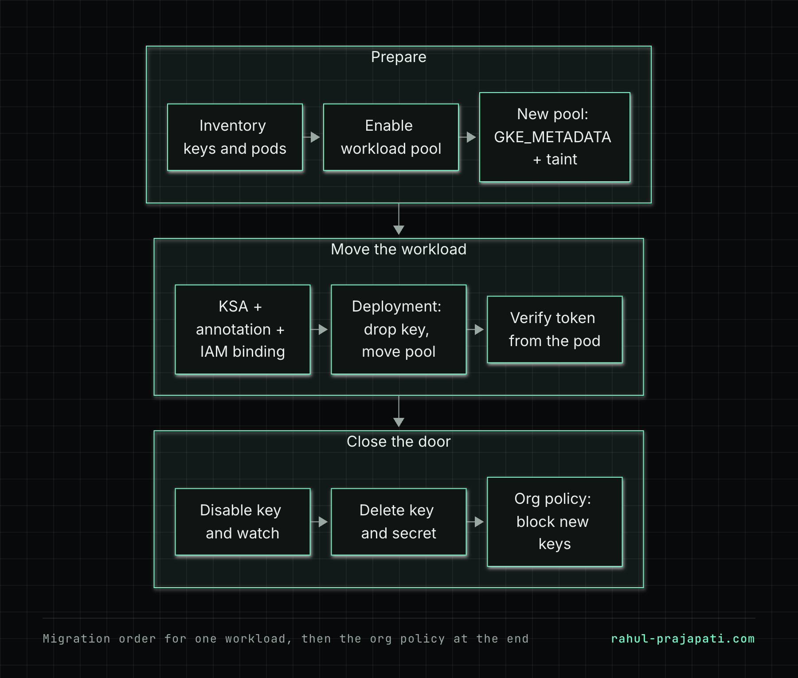

Here's a common way this goes wrong. A Deployment has a Kubernetes secret with a service account JSON key, mounted at /var/secrets/google/key.json, and GOOGLE_APPLICATION_CREDENTIALS points at it. Someone adds the Workload Identity annotation to the Kubernetes service account and rolls out. The app keeps working, so the ticket gets closed. Weeks later the old key is deleted and the app starts failing with invalid_grant: Invalid JWT Signature.
The app was never on Workload Identity. Application Default Credentials (ADC) check GOOGLE_APPLICATION_CREDENTIALS first, then the local gcloud ADC file, and only after that the metadata server. While the env var is set, the key wins and the metadata server never gets asked. The annotation is also only half the setup. Without an IAM binding on the Google service account the pod can't get a token, and you won't see that while the key is covering for it.
So this is the check that matters. Remove the env var, then ask the metadata server for a token from inside the pod. Asking for the email isn't enough. The email endpoint mostly reflects the annotation, and the token endpoint is the one that goes through the IAM binding. A green rollout doesn't prove either of them.
Workload Identity was one of the GKE foundation hardening items I worked on at AirAsia MOVE, and I've updated Terraform modules for WIF and secrets there. What follows is the general pattern, not a copy of any internal setup.
How the pieces fit
With Workload Identity Federation for GKE, every Kubernetes service account (KSA) in a cluster maps to an identity in the project's workload pool, PROJECT_ID.svc.id.goog. For that KSA to act as an existing Google service account (GSA), you need two things:
- An annotation on the KSA that names the GSA.
- An IAM binding on the GSA,
roles/iam.workloadIdentityUser, that lets that exact KSA impersonate it.
The annotation is the KSA pointing at the GSA. The binding is the GSA agreeing to it. The first one usually gets done and the second one gets forgotten.

You can also skip the GSA and grant roles directly to the KSA principal (principal://iam.googleapis.com/projects/PROJECT_NUMBER/locations/global/workloadIdentityPools/PROJECT_ID.svc.id.goog/subject/ns/NAMESPACE/sa/KSA). When you're migrating away from keys, I prefer linking to the existing GSA. It already has the right roles, so the only thing that changes is how the workload authenticates. What it's allowed to do stays the same. You can move to direct grants later, one workload at a time.
Prerequisites
- A GKE Standard cluster you can modify. Autopilot always has Workload Identity on, so skip steps 2 and 3 there.
gcloudandkubectlconfigured for the cluster.- Permission to change IAM and manage keys on the GSAs, and
roles/orgpolicy.policyAdminfor the last step.

Step 1: Find what uses keys today
Start with pods that set the env var:
kubectl get pods -A -o json | jq -r '
.items[]
| select(any(.spec.containers[].env[]?; .name == "GOOGLE_APPLICATION_CREDENTIALS"))
| "\(.metadata.namespace)/\(.metadata.name)"'This misses apps that read a key path from their own config file, and env vars that come in through envFrom. It's still a decent first list. Next, list the user-managed keys on each GSA. You'll need the key IDs in step 7:
gcloud iam service-accounts keys list \
--iam-account=my-app@PROJECT_ID.iam.gserviceaccount.com \
--managed-by=userActivity Analyzer shows when each key last authenticated, which helps you spot keys nothing uses anymore. It needs the Policy Analyzer API enabled in the project:
gcloud policy-intelligence query-activity \
--activity-type=serviceAccountKeyLastAuthentication \
--project=PROJECT_IDThe data lags behind real time, so read it as a hint, not proof.
Step 2: Enable the workload pool on the cluster
gcloud container clusters update my-cluster \
--location=asia-southeast1 \
--workload-pool=PROJECT_ID.svc.id.googOn Standard clusters this doesn't change existing node pools. Pods there keep using the node's metadata exactly as before, which is why you can migrate gradually.
Step 3: Add a node pool with the GKE metadata server
Most guides skip over this part. On a node pool running in GKE_METADATA mode, every pod gets its identity from its KSA. Any pod that was quietly using the node's service account through ADC (no key, no annotation) loses those permissions. Update an existing pool in place and every workload on it switches together, including the ones nobody knew depended on the node SA.
I prefer a separate tainted pool, so only workloads that are already migrated land on it:
gcloud container node-pools create wi-pool \
--cluster=my-cluster \
--location=asia-southeast1 \
--workload-metadata=GKE_METADATA \
--node-taints=workload-identity=enabled:NoSchedule \
--service-account=NODE_SA@PROJECT_ID.iam.gserviceaccount.com \
--machine-type=e2-standard-4 \
--num-nodes=1Once the cluster has a workload pool, new pools default to GKE_METADATA. Passing the flag anyway makes the intent obvious in review. After every workload has moved, remove the taint and retire or update the old pools. In a small cluster where you know every workload, updating in place is fine:
gcloud container node-pools update OLD_POOL \
--cluster=my-cluster \
--location=asia-southeast1 \
--workload-metadata=GKE_METADATATreat it as a disruptive change and run it in a maintenance window.
In Terraform the setup is split between the cluster and the node pool:
resource "google_container_cluster" "this" {
name = "my-cluster"
location = "asia-southeast1"
# ...
workload_identity_config {
workload_pool = "${var.project_id}.svc.id.goog"
}
}
resource "google_container_node_pool" "wi_pool" {
name = "wi-pool"
cluster = google_container_cluster.this.id
location = "asia-southeast1"
node_count = 1
node_config {
machine_type = "e2-standard-4"
service_account = var.node_service_account
workload_metadata_config {
mode = "GKE_METADATA"
}
taint {
key = "workload-identity"
value = "enabled"
effect = "NO_SCHEDULE"
}
}
}Step 4: Create the KSA and both halves of the binding
The KSA, with the annotation:
apiVersion: v1
kind: ServiceAccount
metadata:
name: my-app
namespace: my-namespace
annotations:
iam.gke.io/gcp-service-account: my-app@PROJECT_ID.iam.gserviceaccount.comThe binding on the GSA:
gcloud iam service-accounts add-iam-policy-binding \
my-app@PROJECT_ID.iam.gserviceaccount.com \
--role=roles/iam.workloadIdentityUser \
--member="serviceAccount:PROJECT_ID.svc.id.goog[my-namespace/my-app]"The member string has to match the namespace and KSA name exactly. If the GSA is in a different project, the binding still goes on that GSA (add --project=GSA_PROJECT_ID), but the member uses the cluster project's pool.
The same binding in Terraform. Put it in the same module as the GSA so the two can't drift apart:
resource "google_service_account_iam_member" "workload_identity" {
service_account_id = google_service_account.app.name
role = "roles/iam.workloadIdentityUser"
member = "serviceAccount:${var.project_id}.svc.id.goog[${var.namespace}/${var.ksa_name}]"
}Step 5: Change the Deployment
Point the pod at the KSA, schedule it on the new pool, and remove the key. The env var is what ADC actually reads. If it stays and the file is gone, the client libraries fail with a file-not-found error and don't fall back to the metadata server. Take out the volume too, because some apps open the key path directly, and a key you've stopped using shouldn't still be sitting in the pod.
apiVersion: apps/v1
kind: Deployment
metadata:
name: my-app
namespace: my-namespace
spec:
selector:
matchLabels:
app: my-app
template:
metadata:
labels:
app: my-app
spec:
serviceAccountName: my-app
nodeSelector:
iam.gke.io/gke-metadata-server-enabled: "true"
tolerations:
- key: workload-identity
operator: Equal
value: enabled
effect: NoSchedule
containers:
- name: app
image: REGION-docker.pkg.dev/PROJECT_ID/my-repo/my-app:TAG
# GOOGLE_APPLICATION_CREDENTIALS env removed
# key volume and volumeMount removedDon't delete the Kubernetes secret yet. Rolling back is just reverting this Deployment.
Step 6: Verify from inside the pod
First confirm the env var is really gone from the running pod:
POD=$(kubectl get pod -n my-namespace -l app=my-app -o jsonpath='{.items[0].metadata.name}')
kubectl get pod -n my-namespace "$POD" -o jsonpath='{.spec.containers[*].env[*].name}'GOOGLE_APPLICATION_CREDENTIALS should not be in that list. Now ask the metadata server. App images often have no curl, so attach an ephemeral container. It shares the pod's network namespace, so the metadata server treats it as the same pod:
kubectl debug -it -n my-namespace "pod/$POD" --image=curlimages/curl -- shInside it:
curl -s -H "Metadata-Flavor: Google" \
http://169.254.169.254/computeMetadata/v1/instance/service-accounts/default/email
curl -s -o /dev/null -w "%{http_code}\n" -H "Metadata-Flavor: Google" \
http://169.254.169.254/computeMetadata/v1/instance/service-accounts/default/tokenHow to read the output:
- Email is the GSA and the token call returns
200. The binding works. - Email is the GSA but the token call fails. Run it again without
-o /dev/null -w ...and read the body. It should tell you the GSA is missing an IAM policy binding. Step 4 is half done. - Email is
PROJECT_ID.svc.id.goog. The KSA has no annotation, or the pod is running as a different KSA.
Try it yourself
In a throwaway cluster you can see all three states with a single pod. Run google/cloud-sdk:slim with serviceAccountName: my-app, the same nodeSelector and toleration, and command: ["sleep", "infinity"]. Then:
- Leave the KSA unannotated. The email call returns the pool name.
- Add the annotation but not the binding, and recreate the pod. The email call now shows the GSA, but the token call fails.
- Add the binding and give IAM a minute to propagate. The token call succeeds, and
gcloud auth listinside the pod shows the GSA.
It's about ten minutes of work. After that you'll recognise each of these failures on sight.
Step 7: Disable the key, then delete it
Disable the key first instead of deleting it straight away:
gcloud iam service-accounts keys disable KEY_ID \
--iam-account=my-app@PROJECT_ID.iam.gserviceaccount.comKeep it disabled through at least one full cycle of everything the app does, like batch jobs, month-end reports, or a cron that only runs on Sundays. If something breaks, gcloud iam service-accounts keys enable brings it back immediately. Once it's quiet, delete the key with gcloud iam service-accounts keys delete, then delete the Kubernetes secret. If the secret was synced from a secrets manager, delete it at the source too, or the sync will just recreate it.
Step 8: Stop new keys being created
Migrating workloads doesn't help much if someone creates a fresh key next week. The iam.disableServiceAccountKeyCreation constraint blocks that. With the v2 org policy API:
# policy.yaml
name: projects/PROJECT_ID/policies/iam.disableServiceAccountKeyCreation
spec:
rules:
- enforce: truegcloud org-policies set-policy policy.yamlOr in Terraform, ideally at the organisation or folder level so new projects inherit it:
resource "google_org_policy_policy" "no_sa_keys" {
name = "organizations/${var.org_id}/policies/iam.disableServiceAccountKeyCreation"
parent = "organizations/${var.org_id}"
spec {
rules {
enforce = "TRUE"
}
}
}Set iam.disableServiceAccountKeyUpload the same way, so nobody gets around it by uploading a key they generated locally. Organisations created from May 2024 onwards enforce both by default. Older ones usually don't, so check what your projects actually inherit. If a third-party tool really needs a key, override the policy in that one project with enforce: false and write down why. Before you do, check whether the tool can use Workload Identity Federation from its own platform.
The policy doesn't touch existing keys, so it's safe to enforce early if you know nothing creates keys as part of normal operation. I put it last because key-rotation scripts and some CI jobs create keys on a schedule, and the inventory in step 1 is how you find them before they start failing.
Things that bite
hostNetwork: truepods can't use Workload Identity. They reach the node's metadata directly.- Startup race. The GKE metadata server can take a few seconds before it serves a new pod. An app that fetches a token first thing on boot with no retry may fail once and get restarted. Add a retry or a short init check.
- Identity sameness. Every cluster in a project shares
PROJECT_ID.svc.id.goog(with fleet Workload Identity, the whole fleet shares the fleet host project's pool). A KSA namedmy-appinmy-namespacegets the same access in all of them. Keep namespace names meaningful, and keep dev clusters out of the prod project. - Annotation edits on running pods. Restart the pod after changing the KSA annotation. Don't assume running pods pick it up, and test again after the restart.
- Hidden node SA dependencies. If something breaks after a pool moves to
GKE_METADATA, check whether that workload ever had a KSA binding, or was running on the node's permissions the whole time.